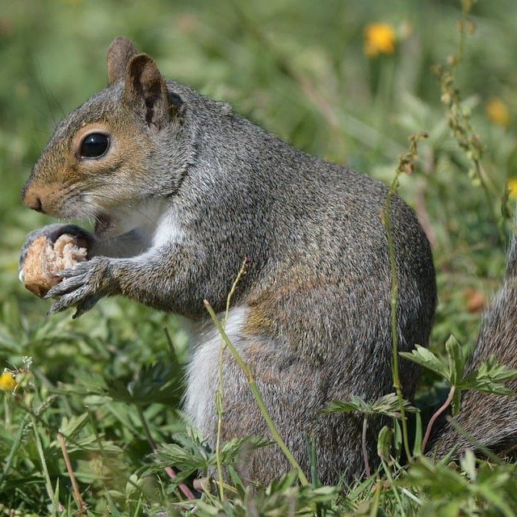

Member of B-team
Pug is the leader of the B-team. He loves pink and always wears pink sunglasses and pink bowtie.
Squirrel is the smallest in the B-team. He likes to eat and his favorite food is nuts.
Duck is the largest in the B-team. He usually quacks and walk around. Nobody knows what he is thinking.
Cat always looks grumpy but, actually she isn't. Her favorite thing to do is to sit and watch movies.
Find out more about B-team
click here to know more about B-team.